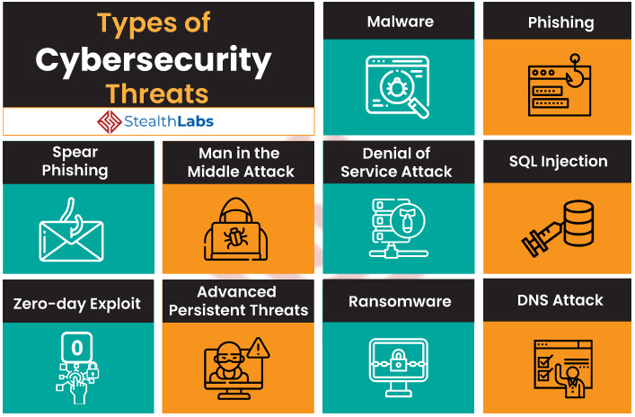
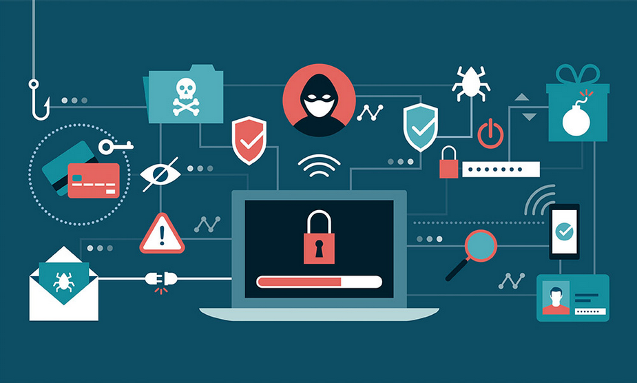

(Source: Kiet Group)
Cybersecurity refers to the practice of protecting computing/mobile devices, networks, servers, and systems from harmful attacks. Security consists of both cybersecurity and physical security – both of which are utilised by businesses to protect themselves against intruders trying to access their information and data. Cybersecurity helps prevents users from online attacks and a breach of their data. Cybersecurity revolves around the industry principles of confidentiality, integrity, and availability.
Over time, cybersecurity risks such as ransomware, phishing, data leakage, hacking and insider threat have grown exponentially. These threats have continued to pose as a threat for the safety of the data and information stored by users online. However, there have also been huge developments in the cyber security field covering various sectors, over the past few years which would assist users greatly in storing and exchanging information and data online. Four developments that are advancing cyber security are;
Blockchain
In essence block chain is a security tool, a system which records information in such a unique way that it makes it extremely difficult or impossible for hackers to access. Blockchain is a digital ledger consisting of transactions, which is duplicated across the entire network of systems on the blockchain, with each block containing a certain number of transactions. In the blockchain, transactions are recorded with cryptographic signature called a hash. So, if one block in the block chain has been changed or tampered with, it would be easily noticeable that it has been intruded by an unauthorised user. Famous examples of blockchain include leading cryptocurrencies; Bitcoin and Ethereum.
Cloud Technology
Cloud technology enables users to utilise the digital resources available using multiple networks. Cloud allows its users to share information with people around the world without many restrictions. Some other advantages of cloud computing include better/increased storage for information and data, better collaboration with remote users, it is easily affordable and finally, disaster recovery. Disaster recovery gives users of the cloud the ability to implement a different types of backup solutions in a cost-effective way in case there is an emergency where the data stored on the cloud is corrupted or lost.
IoT Security
IoT stands for Internet of Things, which refers to all the devices around the globe that are connected to the internet and exchanging and collecting information on the internet. Any object can be turned into an IoT device if it can be connected to the internet and then be controlled or to be used for exchanging information. Some other benefits of IoT include cost-effective operation, better business opportunities and efficient operation management.
AI and Machine Learning
Artificial Intelligence refers to the idea of machines being able to perform tasks in a way which humans would consider smart or intelligent. Machine Learning is an example of AI or a sub-field of AI which in essence is related to the notion of giving machines the ability to access certain data files and let them learn as well reach a conclusion themselves. Some examples of Machine Learning which are seen in the society today include speech recognition, medical diagnosis, and predictive analytics.
A major advantage of cyber-security would be protecting the system from attacks. Different types of malwares such as viruses, ransomware, trojans and adware can severely affect the computing device as well as devices on the same network. Events such as stolen passwords, corrupting computer files and spamming of emails can be prevented if appropriate cyber-safe measure are implemented, thus diminishing the chances of a cyber-attack.
Initially when a virus has been brought into the system, the virus will not perform any activities until a suitable circumstance causes the virus to initialise and start its code. For a virus to infect your computer, the program must be running, which then executes the virus code. This means that a virus can remain latent on your computer for long periods of time without causing any noticeable signs or symptoms. Once a virus has infected your computer, it can spread to other machines on the same network. Passwords or data are stolen, keystrokes are logged, and data is corrupted.
How can the virus spread? Viruses can spread through text messages and emails, downloads from the internet, fraudulent links, and even your mobile devices and smartphones can be infected with mobile viruses from suspicious application downloads. To avoid viruses, use caution when browsing the Internet, downloading files, or opening links or attachments. As a best practice, never download any text or attachments that you weren't expecting including downloading files from websites that are deemed unfit for use.
How to protect your device from viruses A reputable software security example would be the Norton Security software. With well-known technologies that work together to combat online threats, scan your system for viruses, and trigger continuous automatic silent updates, Norton Security protects you from existing, new, and even unintended threats.
(Source: StealthLabs)
Cybersecurity has a great demand, and it does not look like the need for more security professionals would be decreasing in the foreseeable future. Computer attacks are becoming increasingly common and more harmful, and although we tend to hear about high-profile attacks, no company or person in the case of an online presence is safe from such attacks. According to the Bureau of Labor Statistics (America), the rate of growth for jobs in information security is projected at 37% from 2012–2022—that’s much faster than the average for all other occupations.
From a personal standpoint, cybersecurity presents itself as an opportunity which I would like to pursue as a profession in the future. Considering the growth of the online world and especially the reliance of the public on online platforms to store important information and data, cybersecurity is an ever-growing field which as mentioned above would also provide an increasing amount of the number of jobs available in the future. In addition, safety of the information stored and shown online is also something which I am passionate about.
Regarding how cyber security affects the lives of individuals in the society, it does so in a great way. With the growing amount attacks on networks which were discussed prior, it is imperative how users should take in the extra security measures to be completely safe from all the different types of viruses and computer network attacks. Myself being a university student undertaking a course which is heavily reliant on a computer while also undertaking numerous cloud-based activities, the information which I share and present online with my peers must be safe from unauthorised accounts.
(Source: Human Resources Director)